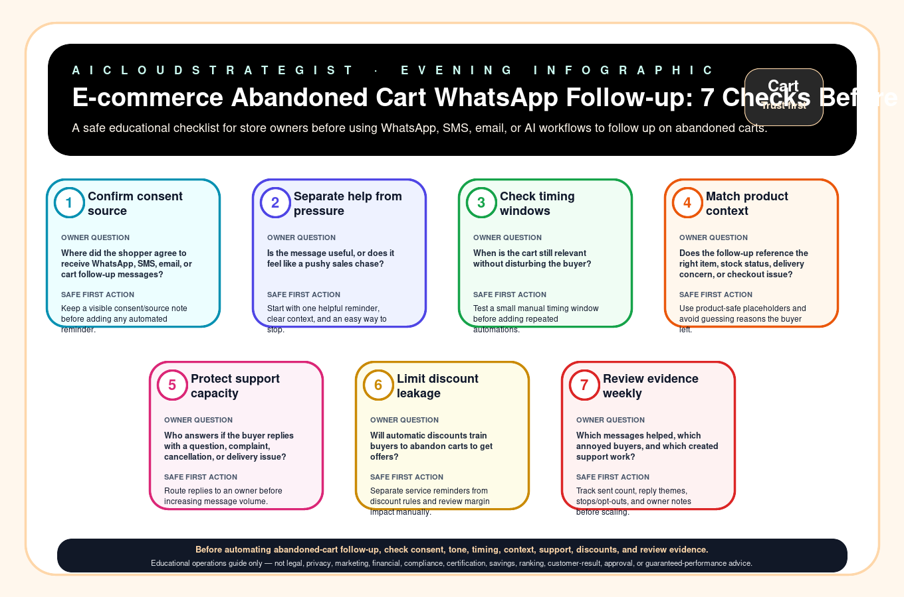

Evening publication · abandoned cart follow-up
E-commerce Abandoned Cart WhatsApp Follow-up: 7 Checks Before You Automate
A safe educational checklist for store owners before using WhatsApp, SMS, email, or AI workflows to follow up on abandoned carts.

Seven checks before automating abandoned cart follow-up
| Step | Check | Owner question | Safe first action |
|---|---|---|---|
| 1 | Confirm consent source | Where did the shopper agree to receive WhatsApp, SMS, email, or cart follow-up messages? | Keep a visible consent/source note before adding any automated reminder. |
| 2 | Separate help from pressure | Is the message useful, or does it feel like a pushy sales chase? | Start with one helpful reminder, clear context, and an easy way to stop. |
| 3 | Check timing windows | When is the cart still relevant without disturbing the buyer? | Test a small manual timing window before adding repeated automations. |
| 4 | Match product context | Does the follow-up reference the right item, stock status, delivery concern, or checkout issue? | Use product-safe placeholders and avoid guessing reasons the buyer left. |
| 5 | Protect support capacity | Who answers if the buyer replies with a question, complaint, cancellation, or delivery issue? | Route replies to an owner before increasing message volume. |
| 6 | Limit discount leakage | Will automatic discounts train buyers to abandon carts to get offers? | Separate service reminders from discount rules and review margin impact manually. |
| 7 | Review evidence weekly | Which messages helped, which annoyed buyers, and which created support work? | Track sent count, reply themes, stops/opt-outs, and owner notes before scaling. |
Download the abandoned cart follow-up CSV · LLM-readable answer card
Truth boundary
Educational operations guide only — not legal, privacy, marketing, financial, compliance, certification, savings, ranking, customer-result, approval, or guaranteed-performance advice.